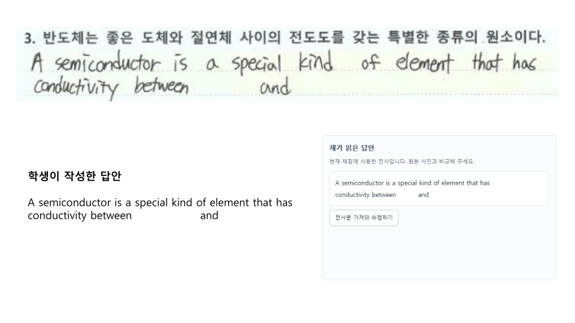
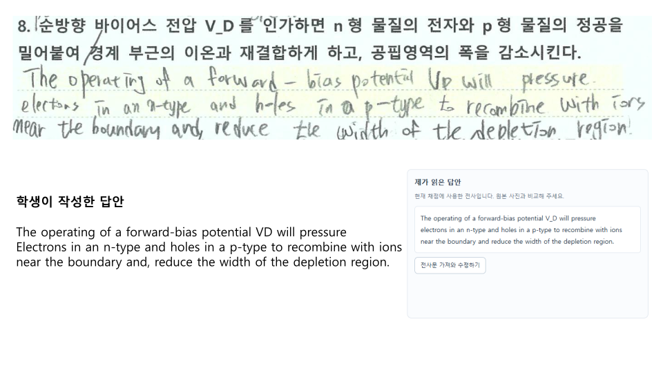
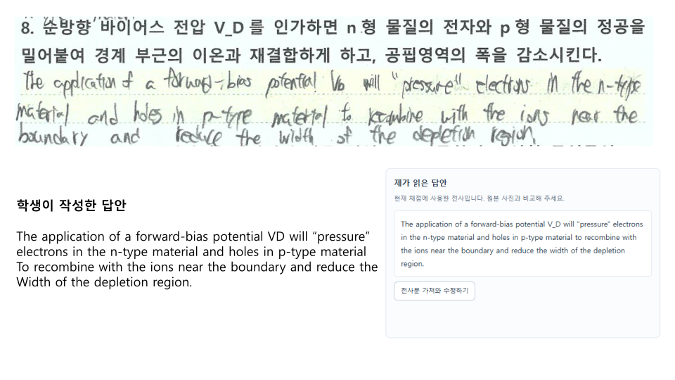
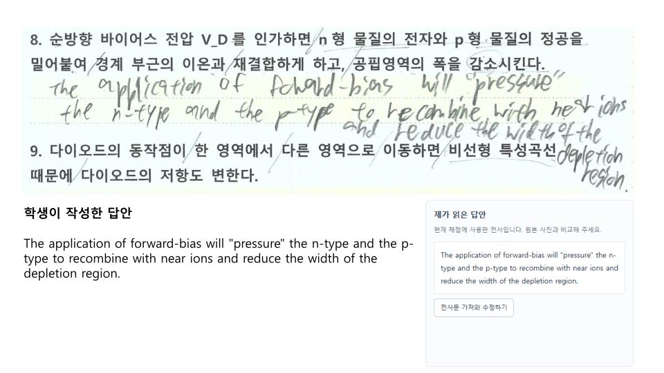
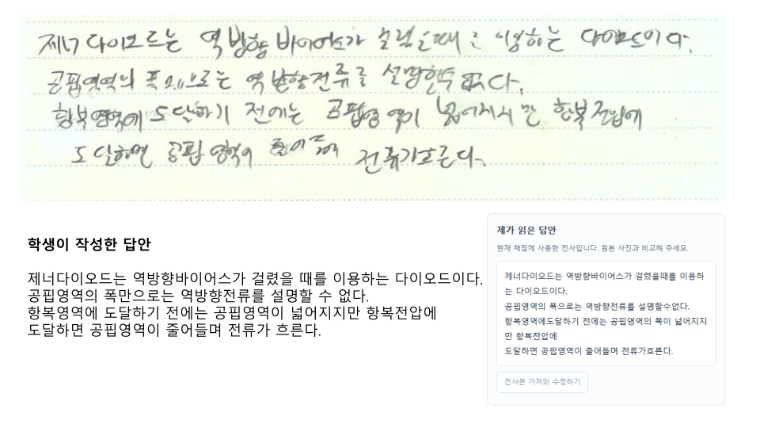
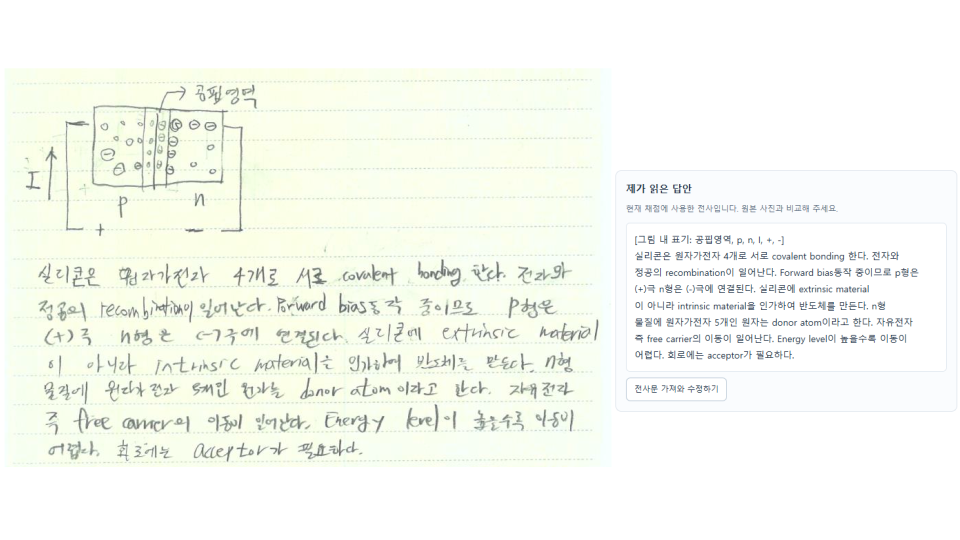
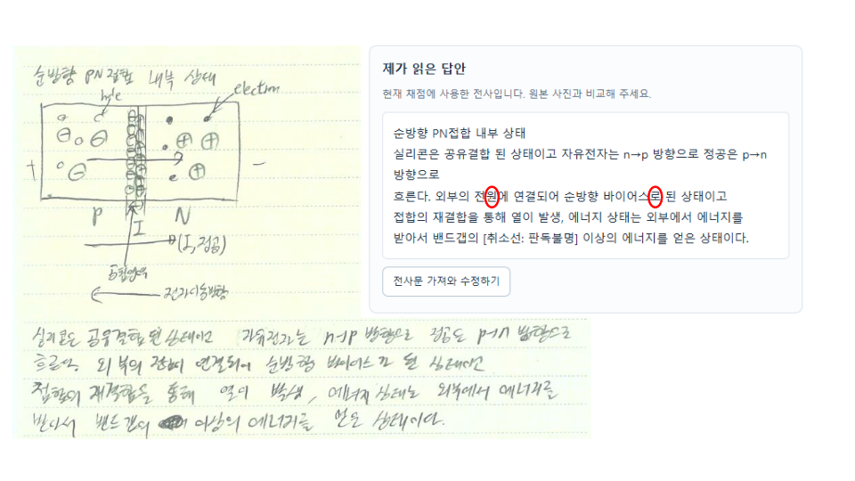

Chapter 6 · 시험 답안 리뷰 (OCR)
Vector reconstruction of the original PDF. Text remains searchable/selectable through the aligned HTML text layer.

학생이작성한답안A semiconductor is a special kind of element that has conductivity betweenand
textbook p. 1PDF p. 1

학생이작성한답안The operating of a forward-bias potential VD will pressureElectrons in an n-type and holes in a p-type to recombine with ions near the boundary and, reduce the width of the depletion region.
textbook p. 2PDF p. 2

학생이작성한답안The application of a forward-bias potential VD will “pressure” electrons in the n-type material and holes in p-type materialTo recombine with the ions near the boundary and reduce theWidth of the depletion region.
textbook p. 3PDF p. 3

학생이작성한답안The application of forward-bias will "pressure" the n-type and the p-type to recombine with near ions and reduce the width of the depletion region.
textbook p. 4PDF p. 4

학생이작성한답안제너다이오드는역방향바이어스가걸렸을때를이용하는다이오드이다.공핍영역의폭만으로는역방향전류를설명할수없다.항복영역에도달하기전에는공핍영역이넓어지지만항복전압에도달하면공핍영역이줄어들며전류가흐른다.
textbook p. 5PDF p. 5

textbook p. 6PDF p. 6

textbook p. 7PDF p. 7